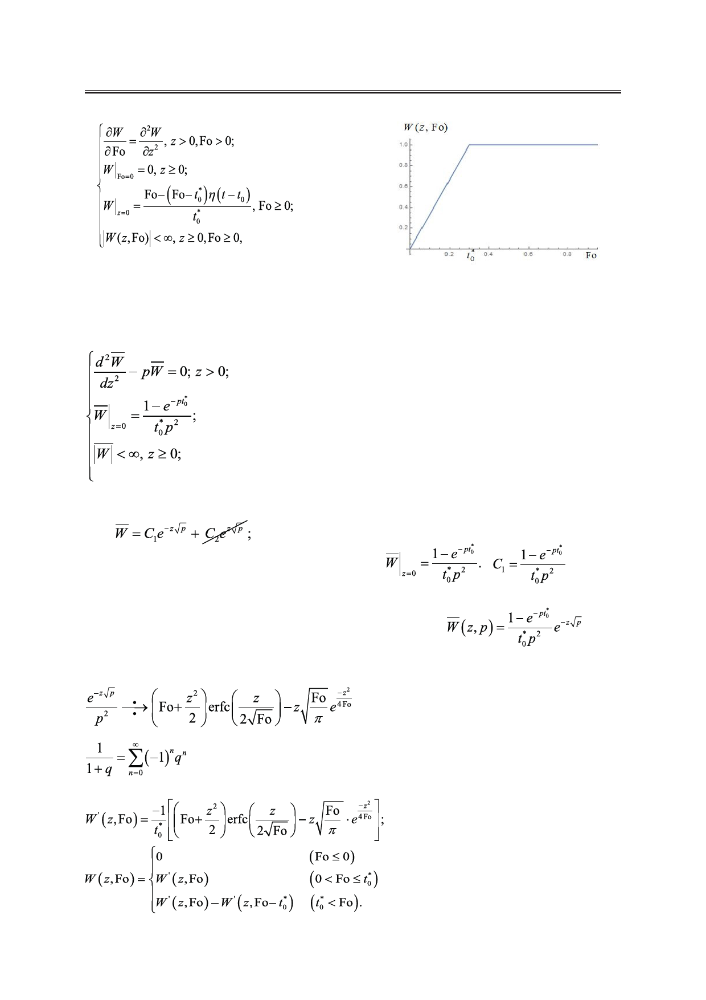

И.А. Джемесюк, С.Г. Горбунов
Рис. 7. График безразмерной темпрературной функции
на границе (температура меняется плавно с учетом времени релаксации).
Воспользуемся здесь интегральным преобразованием Лапласа [1] (формулы 1–3).
Операционная задача имеет следующий вид:
Очевидно, что мы получили задачу Коши для однородного дифференциального урав-
нения второго порядка с постоянными коэффициентами [2]. Её общее решение имеет
вид:
из условия ограниченности константу C2 положим равной
нулю. Найдём C1, исходя из граничного условия:
.
Подставив C1 в выражение для общего решения однородного уравнения [2], получим
решение тепловой задачи в пространстве изображений [1]:
.
Чтобы перевести полученное решение из пространства изображений в пространство
оригиналов, нам понадобится формула (6) и теорема запаздывания (5) (см. выше).
(6)
(7)
Оригинал полученного решения имеет следующий вид:
Российский технологический журнал 2017 Том 5 № 5
45